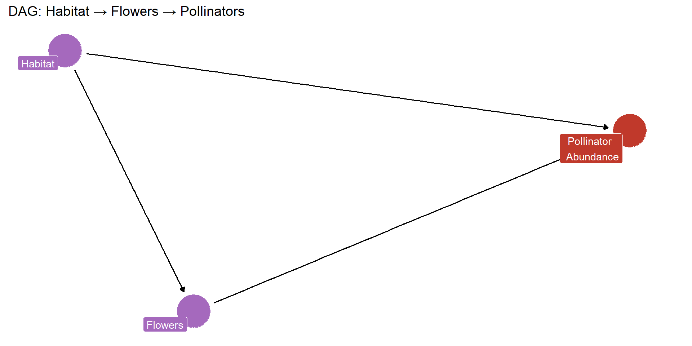
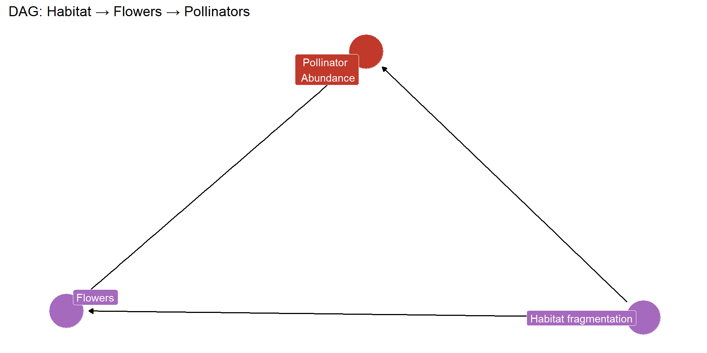

Introduction to R and Rstudio
Our mission
Get you familiar with the R environment
Teach you how to import and work with datasets
Get you familiar with tidy data and
TidyverseShow you how to make simple plots in
ggplot
What is R ?

- Originally developed for statistical computing and graphics
- R has evolved into a versatile programming language
What is RStudio?
RStudio is a user-friendly interface for R
R is prone to errors
Such as typos, using the wrong letter case, forgetting a quote, bracket or comma. Such mistakes will break your code and throw an error.
These type of errors are the most common, so always double-check your code whenever R is unhappy .
Course material
R studio Projects
It is a convenient way to organize your work in RStudio -it creates a dedicated directory (folder) on your computer where you can store all the files related to your project, including R scripts, data files, documentation, and more.
To create a new project, go to:
File>New Project…>New Directory(orExisting Directory)
If you want to create your project from an existing folder:
- >
New Projectand choose aDirectory namefor your project.
- >
Work directory
Code versus comment
There are two types of lines: those that start with the symbol #, and those that do not.
R package
Package is a collection of R functions, data sets, and other resources bundled together for specific purposes.
To install a package, type:
install.packages("package-name")
You only need to install packages once
Load the packages, type:
library(package-name)
Example
Tidyverse
- It is a collection of R packages designed to make data science tasks easier and more efficient.


About tidy data
Tidy data is a standard, consistent way to organize tabular data. Briefly, tidy data follows a short series of rules:

Pipe operator
One of the key features of tidyverse is the possibility to chain functions in an effective way using the pipe operator
%>%or|>.Pipes pass the results from one function directly into the next function connected to each other via a
%>%or|>, making the code easy to read and write.The pipe basically means “and then”.
Note: the keyboard shorcut for
|>isCtrl+Shift+M(Windows & Linux) orCmd+Shift+M(Mac).
Pipe operator
First, I’ll grab the coffee grounds, then I’ll fill up the coffee maker with water, hit the start button, wait for it to brew, and finally pour myself a cup
Iris dataset
The iris flower dataset was collected by Edgar Anderson, an American botanist, in the 1920s. This data was used by statistician Ronald Fisher to demonstrate statistical methods of classification.
Importing data in R
R can import data from files in many different formats. For example:
- csv files with the
readrpackage - excel files with the
readxlpackage - xlm files with the
xml2package - netcdf files with the
ncdf4package - shapefiles with the
sfpackage
Formats
| Function | Value Separator | Decimal Separator |
|---|---|---|
| read_csv() | , | . |
| read_csv2() | ; | , |
| read_tsv() | tab | . |
| read_delim() | custom character | . |
| read_table2() | space | . |
Reading data
Exploring the data
Check that your data was imported without any mistakes
Sepal.Length Sepal.Width Petal.Length Petal.Width Species
1 5.1 3.5 1.4 0.2 setosa
2 4.9 3.0 1.4 0.2 setosa
3 4.7 3.2 1.3 0.2 setosa
4 4.6 3.1 1.5 0.2 setosa
5 5.0 3.6 1.4 0.2 setosa
6 5.4 3.9 1.7 0.4 setosa Sepal.Length Sepal.Width Petal.Length Petal.Width Species
145 6.7 3.3 5.7 2.5 virginica
146 6.7 3.0 5.2 2.3 virginica
147 6.3 2.5 5.0 1.9 virginica
148 6.5 3.0 5.2 2.0 virginica
149 6.2 3.4 5.4 2.3 virginica
150 5.9 3.0 5.1 1.8 virginicaExploring the data
Rows: 150
Columns: 5
$ Sepal.Length <dbl> 5.1, 4.9, 4.7, 4.6, 5.0, 5.4, 4.6, 5.0, 4.4, 4.9, 5.4, 4.…
$ Sepal.Width <dbl> 3.5, 3.0, 3.2, 3.1, 3.6, 3.9, 3.4, 3.4, 2.9, 3.1, 3.7, 3.…
$ Petal.Length <dbl> 1.4, 1.4, 1.3, 1.5, 1.4, 1.7, 1.4, 1.5, 1.4, 1.5, 1.5, 1.…
$ Petal.Width <dbl> 0.2, 0.2, 0.2, 0.2, 0.2, 0.4, 0.3, 0.2, 0.2, 0.1, 0.2, 0.…
$ Species <fct> setosa, setosa, setosa, setosa, setosa, setosa, setosa, s… Sepal.Length Sepal.Width Petal.Length Petal.Width
Min. :4.300 Min. :2.000 Min. :1.000 Min. :0.100
1st Qu.:5.100 1st Qu.:2.800 1st Qu.:1.600 1st Qu.:0.300
Median :5.800 Median :3.000 Median :4.350 Median :1.300
Mean :5.843 Mean :3.057 Mean :3.758 Mean :1.199
3rd Qu.:6.400 3rd Qu.:3.300 3rd Qu.:5.100 3rd Qu.:1.800
Max. :7.900 Max. :4.400 Max. :6.900 Max. :2.500
Species
setosa :50
versicolor:50
virginica :50
Manipulating data

From wide to long
The iris data are organized is “wide” format. Let’s transform in “long” format
iris_long <- iris |> pivot_longer(
cols = -Species,
names_to = "trait",
values_to = "measurement")
head(iris_long)# A tibble: 6 × 3
Species trait measurement
<fct> <chr> <dbl>
1 setosa Sepal.Length 5.1
2 setosa Sepal.Width 3.5
3 setosa Petal.Length 1.4
4 setosa Petal.Width 0.2
5 setosa Sepal.Length 4.9
6 setosa Sepal.Width 3 Group_by and summarize
Filter - subset rows
Select - subset columns
Mutate
Sepal.Length Sepal.Width Petal.Length Petal.Width Species log.Sepal.length
1 5.1 3.5 1.4 0.2 setosa 1.629241
2 4.9 3.0 1.4 0.2 setosa 1.589235
3 4.7 3.2 1.3 0.2 setosa 1.547563
4 4.6 3.1 1.5 0.2 setosa 1.526056
5 5.0 3.6 1.4 0.2 setosa 1.609438
6 5.4 3.9 1.7 0.4 setosa 1.686399Plotting data
You can plot graphs using the ggplot2 package (part of the tidyverse).
Note: ggplot functions are chained using a + sign. This is because ggplot does not pass an object to a function but add different layers on top of each other.
ggplot layers

Source: https://biostats-r.github.io/
Plotting Iris
Lets say we want to plot the relationship between petal length and petal width for each species.
You can visualize such relationship by plotting petal length against petal width in a scatter plot:
Plotting Iris
Plotting Iris
Now lets say you would like to make a boxplot to compare the sepal length between the three species.
Plotting Iris
ggplot offers many plotting possibilities which we will go further into later. If you are eager, you can learn more here or here.
Saving plots
You can save a plot by clicking on the Export button in the Plots window (bottom right window by default).
Save your plots as .svg if your text editor supports it and if you are not limited by file sizes. Otherwise, save your plots as .png.
To go further
Visit: Coding Club
EDGE coding club: Every 15 days, we have a coding club on Mondays at 10:30 in the Supernova room (Natrium)
What is next
- 15 of April 13:15-17:00
- 2125 Marelden
- Linear mixed models
- On Tuesday May 21th, there will be a dedicated session for the projects.
Comments to index your scrips
Script outline in Rstudio